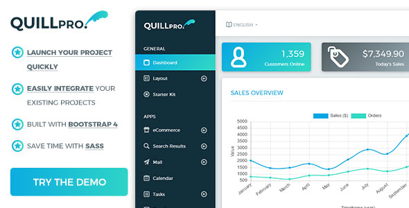

This is the documentation of the React version of QuillPro. If you need the documentation for the HTML version, then click here to open it.
Introduction To QuillPro (React)
This documentation assumes that you are well versed in React so it will not go over the basics. Instead, it will show you how QuillPro React files are arranged and connected so you will be able to integrate it into your own project without issue.
NOTE: If you want to know the HTML structure of each page, you should check out the HTML Documentation for a better understanding. Here's a link to Bootstap 4 to also help you out.

Quick Installation/Setup
If you want to get QuillPro (React) up and running and you can figure things out on your own, just follow the steps below.
- Copy the React folder within your zip file into your project folder
- Open terminal, then 'cd' into your project folder
- Still in the terminal type 'yarn install' and press enter to install dependencies. You can do 'npm install' if you want.
- Type 'yarn start' or 'npm start' to start up the project.
- Visit the url provided in the terminal on your browser.
- That's it! If you don't need further help, then that's it! If you DO need help understanding QuillPro React, then continue reading this documentation.
Overall Folder Layout
QuillPro React is arranged like any simple React app. The folder structure below shows this. Below, we will go into the folders & files needed for you to get QuillPro React up and running.
The 2 main folders (and their contents) that you need to concern yourself about are the:
React/publicReact/src
React/public Folder
This older contains the only HTML file you need: React/public/index.html. This file links to all the CSS, JS and jQuery dependencies that you need to make QuillPro React work right. Look through the file to get a better understanding of what dependencies QuillPro uses.
If you plan on drastically changing the way QuillPro looks, you should add your CSS file link to this index.html file.
The CSS files are separeted into:
- Required Files: These are the code QuillPro style files.
- Optional Files: These files are optional and only required if you want to use a particular plugin that comes with QuillPro.
The JavaScript files are separeted into:
- Required Files: QuillPro requires these files to do their JS magic.
- Optional Files: These files are optional and only required if you want to use a particular plugin that comes with QuillPro.
CSS Dependencies
Here is a look at the file <head> content.
<head> <meta charset="utf-8"> <meta name="viewport" content="width=device-width, initial-scale=1, shrink-to-fit=no"> <meta name="description" content=""> <meta name="author" content=""> <link rel="icon" href="assets/img/favicon.png"> <title>QuillPro - Bootstrap 4 Dashboard Template</title> <!-- Fonts --> <link href="https://fonts.googleapis.com/css?family=Montserrat:300,400,500,700&subset=latin-ext" rel="stylesheet"> <!-- CSS - REQUIRED - START --> <!-- Batch Icons --> <link rel="stylesheet" href="assets/fonts/batch-icons/css/batch-icons.css"> <!-- Bootstrap core CSS --> <link rel="stylesheet" href="assets/css/bootstrap/bootstrap.min.css"> <!-- Material Design Bootstrap --> <link rel="stylesheet" href="assets/css/bootstrap/mdb.min.css"> <!-- Custom Scrollbar --> <link rel="stylesheet" href="assets/plugins/custom-scrollbar/jquery.mCustomScrollbar.min.css"> <!-- Hamburger Menu --> <link rel="stylesheet" href="assets/css/hamburgers/hamburgers.css"> <!-- Tags Input --> <link rel="stylesheet" href="assets/plugins/tagsinput/bootstrap-tagsinput.min.css"> <!-- Timelify --> <link rel="stylesheet" href="assets/plugins/timelify/css/timelify.css"> <!-- CSS - REQUIRED - END --> <!-- CSS - DEMO - START --> <link rel="stylesheet" href="assets/demo/css/ui-icons-batch-icons.css"> <!-- CSS - DEMO - END --> <!-- CSS - OPTIONAL - START --> <!-- Font Awesome --> <link rel="stylesheet" href="assets/fonts/font-awesome/css/font-awesome.min.css"> <!-- JVMaps --> <link rel="stylesheet" href="assets/plugins/jvmaps/jqvmap.min.css"> <link type="text/css" href="assets/css/quillpro/quillpro-print.css" media="print" rel="stylesheet" /> <link rel="stylesheet" href="assets/plugins/datatables/css/responsive.dataTables.min.css"> <link rel="stylesheet" href="assets/plugins/datatables/css/responsive.bootstrap4.min.css"> <!-- Prettify --> <link rel="stylesheet" href="assets/plugins/prettify/css/prettify.css"> <link rel="stylesheet" href="assets/plugins/prettify/css/prettify-bootstrap.min.css"> <!-- CSS - OPTIONAL - END --> </head>
Javascript Dependencies
Here is a look at the file <head> content.
NOTE Place this just above the closing </body> tag.
<!-- SCRIPTS - REQUIRED START --> <!-- Placed at the end of the document so the pages load faster --> <!-- Bootstrap core JavaScript --> <!-- JQuery --> <script type="text/javascript" src="assets/js/jquery/jquery-3.1.1.min.js"></script> <!-- Popper.js - Bootstrap tooltips --> <script type="text/javascript" src="assets/js/bootstrap/popper.min.js"></script> <!-- Bootstrap core JavaScript --> <script type="text/javascript" src="assets/js/bootstrap/bootstrap.min.js"></script> <!-- MDB core JavaScript --> <script type="text/javascript" src="assets/js/bootstrap/mdb.min.js"></script> <!-- Velocity --> <script type="text/javascript" src="assets/plugins/velocity/velocity.min.js"></script> <script type="text/javascript" src="assets/plugins/velocity/velocity.ui.min.js"></script> <!-- Custom Scrollbar --> <script type="text/javascript" src="assets/plugins/custom-scrollbar/jquery.mCustomScrollbar.concat.min.js"></script> <!-- jQuery Visible --> <script type="text/javascript" src="assets/plugins/jquery_visible/jquery.visible.min.js"></script> <!-- IE10 viewport hack for Surface/desktop Windows 8 bug --> <script type="text/javascript" src="assets/js/misc/ie10-viewport-bug-workaround.js"></script> <!-- SCRIPTS - REQUIRED END --> <!-- SCRIPTS - OPTIONAL START --> <!-- ChartJS --> <script type="text/javascript" src="assets/plugins/chartjs/chart.bundle.min.js"></script> <!-- Easy Pie Chart --> <script type="text/javascript" src="assets/plugins/easypiechart/jquery.easypiechart.min.js"></script> <!-- JVMaps --> <script type="text/javascript" src="assets/plugins/jvmaps/jquery.vmap.min.js"></script> <script type="text/javascript" src="assets/plugins/jvmaps/maps/jquery.vmap.usa.js"></script> <!-- Timelify --> <script type="text/javascript" src="assets/plugins/timelify/js/jquery.timelify.min.js"></script> <!-- Form Wizard --> <script type="text/javascript" src="assets/plugins/bootstrap-wizard/jquery.bootstrap.wizard.min.js"></script> <!-- Form Validation --> <script type="text/javascript" src="assets/plugins/jquery-mask/jquery.mask.min.js"></script> <!-- Type Ahead --> <script type="text/javascript" src="assets/plugins/typeahead/typeahead.bundle.min.js"></script> <!-- Tags Input --> <script type="text/javascript" src="assets/plugins/tagsinput/bootstrap-tagsinput.min.js"></script> <!-- Prettify --> <script type="text/javascript" src="assets/plugins/prettify/js/prettify.js"></script> <!-- CKEditor --> <script type="text/javascript" src="assets/plugins/ckeditor/ckeditor.js"></script> <script type="text/javascript" src="assets/plugins/ckeditor/adapters/jquery.js"></script> <!-- This jQuery Adapter is REQUIRED for CKEditor to function properly --> <!-- Datatables --> <script type="text/javascript" src="assets/plugins/datatables/js/jquery.dataTables.min.js"></script> <script type="text/javascript" src="assets/plugins/datatables/js/dataTables.bootstrap4.min.js"></script> <script type="text/javascript" src="assets/plugins/datatables/js/dataTables.responsive.min.js"></script> <script type="text/javascript" src="assets/plugins/datatables/js/responsive.bootstrap4.min.js"></script> <!-- SCRIPTS - OPTIONAL END --> </body>
React/src Folder
Support
All support requests will be responded by our Customer Service Department.
Please state the name of the theme (QuillPro HTML) in the subject of your email.
Support Center: https://base5builder.com/support
Email support@base5builder.com
Behance: behance.net/TheInterlop3r